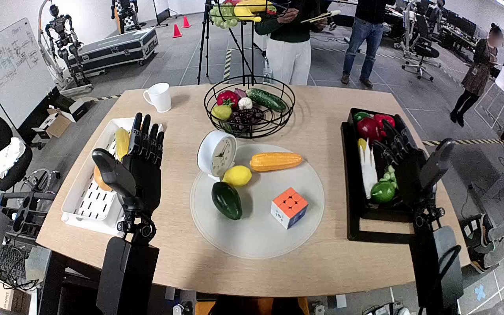

NVIDIA GR1 · 90
Video 90

Visual review action_review.json
{
"prompt_protocol": "humanoid_action_v1",
"prompt_provenance": "visually_authored_from_video_and_initial_frame",
"reviewed_contact_sheets": [
"sheet_001.jpg"
],
"inspected_frame_stride": 2,
"inspected_sampled_frame_count": 60,
"initial_scene": "Robot-centered downward view of its two forearms and hands at a table. Orange-topped Rubik's cube is on the circular gray mat; black produce rack is to the robot's right. Both hands start open.",
"observed_sequence": [
{
"source_frame_interval": [
0,
17
],
"action": "Both hands remain open near the table; cube rests on the circular mat.",
"confidence": "high"
},
{
"source_frame_interval": [
18,
49
],
"action": "Right arm raises and moves the open hand leftward from above the black rack toward the cube; left hand stays open and uninvolved.",
"confidence": "high"
},
{
"source_frame_interval": [
50,
79
],
"action": "Right hand descends around the cube and closes thumb and fingers against opposite sides, enclosing the cube while it remains at the mat.",
"confidence": "high"
},
{
"source_frame_interval": [
80,
95
],
"action": "Right hand lifts the cube clear of the mat and carries it rightward and upward toward the black rack.",
"confidence": "high"
},
{
"source_frame_interval": [
96,
113
],
"action": "Right hand moves the held cube over the rack and lowers it among the produce.",
"confidence": "high"
},
{
"source_frame_interval": [
114,
119
],
"action": "Right thumb and fingers open; cube drops a short distance into the rack and is visibly separated from the opened hand at the ending.",
"confidence": "high"
}
],
"arm_hand_roles": {
"right": "Active hand: grasps cube with thumb and fingers, lifts, transports to black rack, lowers, and releases it.",
"left": "Remains open beside the mat with slight passive changes in pose; does not contact the cube, rack, or right hand.",
"coordination": "Single-hand manipulation. No two-hand transfer or object stabilization; no interaction with a person."
},
"anatomical_side_evidence": {
"description": "The camera looks outward/down from the robot side of the table: its forearms enter from the lower left and lower right of the same view, extending away toward the tabletop. The open mirrored hands and thumb configuration are consistent with this robot-centered view. The manipulating arm remains continuously attached to the lower-right forearm and is the anatomical right arm; the other is left.",
"confidence": "high",
"limitations": "Shoulder and torso attachment points are outside the image; naming is supported by the robot-centered forearm origin and mirrored hand geometry, rather than image side alone."
},
"terminal_state": "Cube has left the circular mat and rests inside the black rack among the produce. Right hand is open above it with visible separation from the cube; left hand remains open and uninvolved.",
"uncertainties": [
"Exact bottom-surface contact and final cube orientation are partially occluded by the right hand and produce; visible separation confirms release into the rack."
],
"annotation_discrepancies": [],
"evidence_frame_indices": [
0,
48,
72,
84,
94,
104,
108,
112,
116,
119
],
"selected_execution_status": "success",
"video_id": "90",
"dataset": "NVIDIA_GR1_100",
"dedicated_review_agent": "review_gr1_90",
"review_source_video": "NVIDIA_GR1_100/90/original/original.mp4",
"source_frame_count": 120,
"source_fps": 20.0,
"native_detail_frames": [
0,
48,
72,
84,
94,
104,
108,
112,
116,
119
],
"world_model_prompt": "The robot uses its right hand to grasp the Rubik's cube on the circular gray mat between its thumb and curled fingers, then lifts it clear. It carries the cube to the black rack on its right, lowers it among the produce, and opens its hand to release it inside the rack. Keep the camera fixed; preserve robot geometry, physically valid joint motion, and normal gripper opening and closing.",
"original_task_instruction": "Use the right hand to pick up rubik's cube from circular gray mat to black rack.",
"selected_segment": {
"start_frame": 0,
"end_frame_exclusive": 120,
"reason": "Complete original single-task reference; no cropping or trimming requested."
},
"source_video_sha256": "082de181642b526a42d193e9cba834869e2f2d88ca8326a7df987ce7578f462f",
"review_completed_at": "2026-10-13T18:39:09.406623+00:00"
}